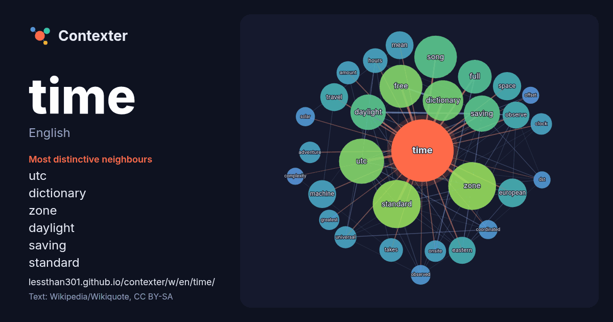

English · word of the day list
time
The words found around it in 2046 instances from English Wikipedia, Wikiquote and Hacker News.

Most distinctive neighbours
- utc 78×
- dictionary 62×
- zone 57×
- daylight 51×
- saving 46×
- standard 41×
- free 31×
- observe 28×
- machine 22×
- full 21×
- onsite 20×
- travel 19×
- clock 17×
- universal 16×
- mean 15×
- coordinated 15×
- adventure 15×
- space 15×
- takes 14×
- amount 14×
× = how many times more often than in general English Wikipedia text.
Most frequent neighbours
- standard 95
- zone 94
- film 84
- utc 84
- free 76
- song 75
- dictionary 68
- saving 54
- daylight 52
- album 47
- full 47
- american 44
- central 39
- european 34
- space 33
- summer 33
- machine 32
- mean 32
- travel 32
- system 31
In context
- Time is the continuous progression of existence that occurs in an apparently irreversible succession from the past, through the present, and into the future Wikipedia snippets · Time
- Time is an American news magazine based in New York City. It was published weekly for nearly a century. Starting in March 2020, it was published every Wikipedia snippets · Time (magazine)
- Titan Mare Explorer (TiME) is a proposed design for a lander for Saturn's moon Titan. TiME is a relatively low-cost, outer-planet mission designed to Wikipedia snippets · Titan Mare Explorer
- In Time is a 2011 American science fiction action film written, co-produced, and directed by Andrew Niccol. Justin Timberlake and Amanda Seyfried star Wikipedia snippets · In Time
- A time zone is an area which observes a uniform standard time for legal, commercial, and social purposes. Time zones tend to follow the boundaries between Wikipedia snippets · Time zone
- The Time 100 is a list of the 100 most influential people in the world as identified by Time, an American news magazine. First published in 1999 as the Wikipedia snippets · Time 100
- Look up time after time in Wiktionary, the free dictionary. Time After Time may refer to: Time After Time (1979 film), an American film based on the Karl Wikipedia snippets · Time After Time
- On Time is the debut studio album by American rock band Grand Funk Railroad, released on August 25, 1969, by Capitol Records. It was recorded at Cleveland Wikipedia snippets · On Time
More English words
- art
- autumn
- bell
- bread
- bridge
- cat
- city
- climate
- clock
- death
- desert
- dog
- family
- food
- forest
- garden
- god
- gold
- health
- heart
- history
- honey
- horse
- island
- language
- life
- map
- mirror
- money
- mother
- mountain
- nature
- power
- rain
- road
- salt
- science
- shadow
- silence
- song
- star
- storm
- summer
- tea
- train
- truth
- water
- winter
- work
Precomputed on 2026-10-09 with default settings (±5 words, medium corpus). The interactive map can refresh it with live data.